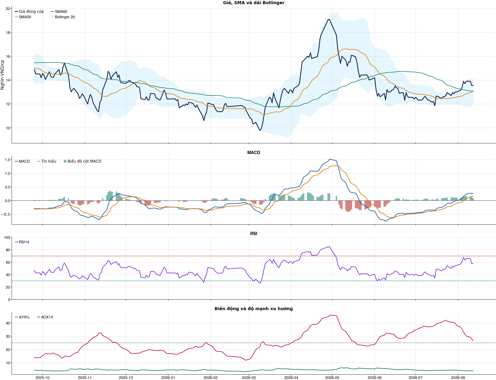
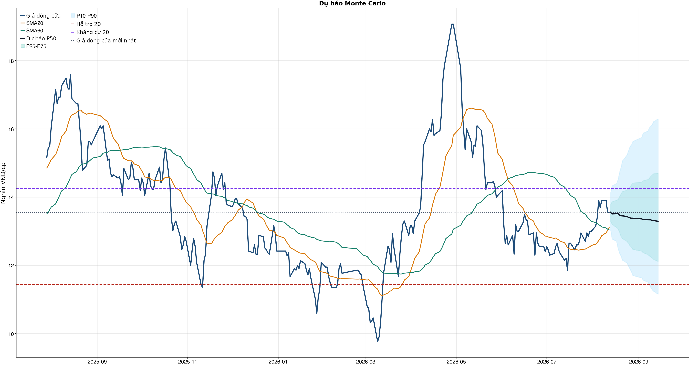
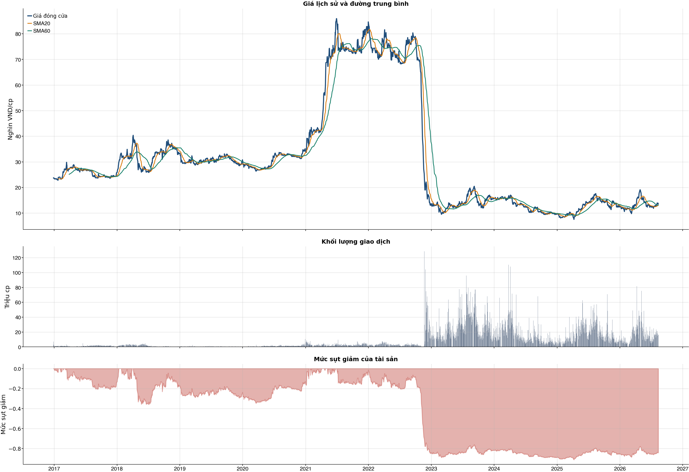

Kết quả chính
KPI đọc nhanh trước, chi tiết bấm mở bên dướiChi phí & vòng lệnh
Trọng tâm: tránh giao dịch nhiều làm phí ăn hết lợi thếKhuyến nghị đầu tư sau phíWAIT
| Khuyến nghị sau phí | WAIT | Chờ điểm mua tốt hơn |
| Lý do chính | Ngưỡng sau phí đang tốt hơn là 0.62, nhưng xác suất hiện tại chỉ 52.8%. | |
| Xác suất hiện tại | 52.8% | So với ngưỡng sau phí được chọn từ OOS. |
| Ngưỡng sau phí chọn | 0.62 | Ngưỡng 0.62; net +1.3%; 3 vòng. |
| Baseline cấu hình | 50 vòng | Net sau phí -31.5%. |
| Reward/Risk | 3.78 | Chỉ dùng nếu decision cuối cùng cho phép mở vị thế. |
Đây là lớp ra quyết định sau phí: chỉ xem xét mua khi xác suất hiện tại vượt ngưỡng đã sống sót qua backtest OOS sau chi phí và các guard chính không bị phá.
Bảng chính: turnover, gross, phí và net61 / 38 / 31 / 20 / 10 / 5 / 1
| Kịch bản | Cách chọn | Vòng | Gross trước phí | Phí | Net sau phí | Sharpe | Ghi chú |
|---|---|---|---|---|---|---|---|
| Gốc | Ngưỡng gốc ≥ 0.55 | 50 | -12.2% | 24.7% | -31.5% | -0.90 | Baseline 61 vòng nếu model phát tín hiệu nhiều. |
| Ngưỡng 0.58 | Chỉ vào lệnh khi xác suất ≥ 0.58 | 13 | +0.5% | 6.4% | -5.8% | -0.29 | Tăng ngưỡng để giảm vòng lệnh. |
| Ngưỡng 0.60 | Chỉ vào lệnh khi xác suất ≥ 0.60 | 5 | +3.2% | 2.5% | +0.6% | 0.13 | Tăng ngưỡng để giảm vòng lệnh. |
| Ngưỡng 0.62 | Chỉ vào lệnh khi xác suất ≥ 0.62 | 3 | +2.8% | 1.5% | +1.3% | 0.40 | Tăng ngưỡng để giảm vòng lệnh. |
| Giới hạn 10 vòng | Tối đa 10 vòng, ưu tiên xác suất cao hơn | 10 | +7.7% | 5.0% | +2.5% | 0.22 | Ngưỡng xác suất trong nhóm: 59.2%. |
| Giới hạn 5 vòng | Tối đa 5 vòng, ưu tiên xác suất cao hơn | 5 | +3.2% | 2.5% | +0.6% | 0.13 | Ngưỡng xác suất trong nhóm: 60.5%. |
| Giới hạn 1 vòng | Tối đa 1 vòng, ưu tiên xác suất cao hơn | 1 | +2.4% | 0.5% | +1.9% | 0.60 | Ngưỡng xác suất trong nhóm: 63.9%. |
Đọc bảng này từ trái sang phải: số vòng càng ít thì phí càng thấp, nhưng kết quả sau phí vẫn chỉ là kiểm thử OOS. Các dòng 10/5/1 giới hạn số vòng bằng xác suất model cao hơn, không phải chọn lệnh thắng sau khi biết kết quả và không tự biến NO_EDGE thành BUY.
Breakdown trước phí / sau phívì sao gross dương nhưng net âm
| Kịch bản trước chi phí | -12.2% | Gross PnL -12,184,692 VND; chưa trừ commission/slippage/tax. |
| Chi phí giao dịch | -24.7% | 50 vòng; entry 20.0 bps + exit 30.0 bps = 50.0 bps/vòng; tổng phí 20,303,711 VND. |
| Kịch bản sau chi phí | -31.5% | Net PnL -31,516,711 VND; gross - cost gap khoảng +19.3%. |
| Ngưỡng phí hòa vốn | -24.6 bps/vòng | Phí hiện tại 50.0 bps/vòng; cao hơn ngưỡng này thì gross dương vẫn có thể thành net âm. |
| Kết luận hành động | CHƯA CÓ LỢI THẾ (NO_EDGE) | Không đủ lợi thế sau phí; giữ NO_EDGE. |
| Cách cải thiện cần test | Giảm turnover | Hiện có 50 phiên active/50 vòng; nên test threshold 0.58/0.60/0.62 hoặc giữ nhiều phiên hơn. |
Kiểm thử chiến lược ngoài mẫu sau chi phí50 vòng
| Lợi nhuận ròng | -31.5% | 702 quan sát ngoài mẫu |
| Sharpe | -0.90 | Sau chi phí |
| Mức sụt giảm tối đa | -42.2% | 50 vòng giao dịch |
| Chi phí giả định | 50.0 bps | Một vòng mua và bán |
So sánh mô hìnhXGBoost vs Logistic
| XGBoost | 0.497 | AUC 0.534 |
| Logistic | 0.506 | AUC 0.515 |
| Đa số | 0.500 | Mốc so sánh |
Mức độ quan trọng của đặc trưngtop feature
| market_return_1d | 10.21 | Mức đóng góp |
| macd_pct | 9.98 | Mức đóng góp |
| beta_60d | 9.83 | Mức đóng góp |
| adx_14 | 9.62 | Mức đóng góp |
| excess_return_5d | 9.20 | Mức đóng góp |
| stoch_k_14 | 8.44 | Mức đóng góp |
| bb_position_20 | 8.42 | Mức đóng góp |
| rsi_14 | 8.42 | Mức đóng góp |
Điều kiện phát hành tín hiệuCHƯA CÓ LỢI THẾ (NO_EDGE)
| AUC của mô hình | KHÔNG ĐẠT | Điều kiện phát hành tín hiệu |
| Độ chính xác cân bằng của mô hình | KHÔNG ĐẠT | Điều kiện phát hành tín hiệu |
| XGBoost vượt mô hình Logistic đối chứng | ĐẠT | Điều kiện phát hành tín hiệu |
| Xác suất tăng đạt ngưỡng | KHÔNG ĐẠT | Điều kiện phát hành tín hiệu |
| Bối cảnh kỹ thuật đạt ngưỡng | ĐẠT | Điều kiện phát hành tín hiệu |
| Tỷ lệ lợi nhuận/rủi ro đạt ngưỡng | ĐẠT | Điều kiện phát hành tín hiệu |
| Dữ liệu còn mới | ĐẠT | Điều kiện phát hành tín hiệu |
| Có khối lượng vị thế hợp lệ | ĐẠT | Điều kiện phát hành tín hiệu |
| Có kết quả kiểm thử chiến lược ngoài mẫu | ĐẠT | Điều kiện phát hành tín hiệu |
| Mẫu kiểm thử chiến lược đủ lớn | ĐẠT | Điều kiện phát hành tín hiệu |
| Kiểm thử chiến lược có lợi thế ròng | KHÔNG ĐẠT | Điều kiện phát hành tín hiệu |
Quản trị rủi rostop / target
| Rủi ro/lệnh | 1.0% | 1,000,000 VND |
| Mức dừng lỗ | 12.91 | Rủi ro mỗi cổ phiếu 0.70 |
| Mục tiêu 1 | 16.29 | Lợi nhuận/rủi ro 3.78 |
| Mục tiêu 2 | 16.29 | Dự báo/kháng cự |
Kỹ thuật
Biểu đồ mở sẵn, bảng tín hiệu thu gọnBiểu đồ kỹ thuật

Tín hiệu kỹ thuậtchi tiết
| Xu hướng | Tích cực | Giá nằm trên SMA20 và SMA60. |
| MACD | Tích cực | MACD trên signal, histogram dương. |
| RSI14 | Tích cực | RSI 57.7. |
| Bollinger | Ổn định | Giá nằm trong dải Bollinger. |
| ADX | Xu hướng tăng | ADX 26.6, +DI vượt -DI. |
| Thanh khoản | Bình thường | 0.86 lần trung bình. |
| Stochastic | Yếu lại | %K nằm dưới %D. |
Cơ bản & tin tức
Các bảng dài để trong nút bungPhân tích cơ bảnBCTC/tỷ số
| P/E | 7.33 | 2026-Q2 |
| P/B | 0.67 | 2026-Q2 |
| P/S | 3.90 | 2026-Q2 |
| ROE | 9.5% | 2026-Q2 |
| ROA | 1.7% | 2026-Q2 |
| Gross margin | 64.5% | 2026-Q2 |
| Net margin | 51.5% | 2026-Q2 |
| Debt/Equity | 2.96 | 2026-Q2 |
| Current ratio | 2.12 | 2026-Q2 |
| NPL | 0.0% | 2026-Q2 |
| Dividend yield | 0.0% | 2026-Q2 |
| Market cap | 32,548.0 tỷ | 2026-Q2 |
| Revenue Growth | -22.1% | 2026-Q2 YoY |
| Dòng tiền từ HĐKD | -3,158.3 tỷ | 2026-Q2 |
| CAPEX | -4.7 tỷ | 2026-Q2 |
| Lợi nhuận sau thuế | 912.0 tỷ | 2026-Q2 |
| Lợi nhuận hoạt động | 1,220.0 tỷ | 2026-Q2 |
| Chi phí lãi vay | -144.6 tỷ | 2026-Q2 |
| Tiền và tương đương tiền | 4,878.8 tỷ | 2026-Q2 |
| Vay ngắn hạn | 30,482.4 tỷ | 2026-Q2 |
| Vay dài hạn | 42,428.6 tỷ | 2026-Q2 |
| Tổng tài sản | 258,658.0 tỷ | 2026-Q2 |
| Tổng nợ phải trả | 193,420.1 tỷ | 2026-Q2 |
| Vốn chủ sở hữu | 65,237.9 tỷ | 2026-Q2 |
| Khoản phải thu | 28,932.7 tỷ | 2026-Q2 |
| Hàng tồn kho | 157,711.9 tỷ | 2026-Q2 |
| Dòng tiền tự do (CFO - CAPEX) | -3,163.0 tỷ | 2026-Q2 |
| CFO / Lợi nhuận sau thuế | -3.46 | 2026-Q2 |
| Nợ vay ròng | 68,032.2 tỷ | 2026-Q2 |
| Nợ vay / Vốn chủ sở hữu | 1.12 | 2026-Q2 |
| Phải thu / Tổng tài sản | 11.2% | 2026-Q2 |
| Khả năng trả lãi (EBIT / lãi vay) | 8.44 | 2026-Q2 |
Tin tức doanh nghiệpresearch only
| Trạng thái | Có dữ liệu | research_only |
| Nguồn / số bài | VCI | 50 |
| Bài đủ timestamp | 50 | Chỉ các bài này mới được phép dùng point-in-time |
| Sentiment 5 ngày | 0.00 | 0.0 bài trước cutoff |
| Phương pháp | keyword_heuristic_v1 | Research only; chưa dùng làm tín hiệu mua/bán |
Dự báo
Kịch bản giá và lịch sử drawdownDự báo ngắn hạn20 phiên
| 2026-08-13 | 13.56 | P10 13.05 / P90 14.12 |
| 2026-08-14 | 13.51 | P10 12.77 / P90 14.33 |
| 2026-08-17 | 13.52 | P10 12.71 / P90 14.40 |
| 2026-08-18 | 13.52 | P10 12.50 / P90 14.51 |
| 2026-08-19 | 13.47 | P10 12.36 / P90 14.72 |
| 2026-08-20 | 13.45 | P10 12.27 / P90 14.87 |
| 2026-08-21 | 13.45 | P10 12.15 / P90 15.06 |
| 2026-08-24 | 13.44 | P10 12.08 / P90 15.23 |
Lịch giao dịch Việt Nam dùng cho forecastkhông tính T7/CN/lễ
VN stock calendar: loại Thứ Bảy/Chủ Nhật và các ngày nghỉ 2026 đã công bố; ngày làm bù Thứ Bảy không được tính là phiên giao dịch chứng khoán.
Ngày nghỉ đã loại: 2026-01-01, 2026-01-02, 2026-02-16, 2026-02-17, 2026-02-18, 2026-02-19, 2026-02-20, 2026-04-27, 2026-04-30, 2026-05-01, 2026-08-31, 2026-09-01, 2026-09-02
Nếu HOSE/HNX/UPCoM công bố nghỉ đột xuất, cần thêm ngày đó vào config `market_holidays` rồi chạy lại report.
Biểu đồ dự báo

Lịch sử giá và mức sụt giảm

Báo cáo dùng để học tập và lập kịch bản, không phải khuyến nghị mua/bán.
Phân tích AI có kiểm chứngbấm mở
Trạng thái quyết định: NO_EDGE
Tóm tắt: ML decision hiện giữ nguyên NO_EDGE. News Reader đã trích đoạn có nguồn của 2 bài để phân loại chủ đề (ket_qua_kinh_doanh: 2), nhưng các trích đoạn này không tạo bằng chứng mới cho quyết định đầu tư.
Kỹ thuật: Artifact kỹ thuật: bias Tích cực; điểm 7. Chi tiết artifact: Xu hướng: Tích cực (Giá nằm trên SMA20 và SMA60.); MACD: Tích cực (MACD trên signal, histogram dương.); RSI14: Tích cực (RSI 57.7.); Bollinger: Ổn định (Giá nằm trong dải Bollinger.); ADX: Xu hướng tăng (ADX 26.6, +DI vượt -DI.); Thanh khoản: Bình thường (0.86 lần trung bình.); Stochastic: Yếu lại (%K nằm dưới %D.)
Cơ bản: Artifact cơ bản: Novaland; kỳ 2026-Q2; P/E 7.33; P/B 0.67; ROE 9.5%; ROA 1.7%; Debt/Equity 2.96; Revenue Growth -22.1%.
Tin tức: Đã đọc trích đoạn giới hạn của 2 bài; phân nhóm rule-based: ket_qua_kinh_doanh: 2. Tác động cần kiểm chứng: Đối chiếu doanh thu/lợi nhuận trong bài với BCTC và kỳ vọng thị trường. Đây không phải sentiment hay dự báo tác động giá.
Live research: Live snapshot lấy lúc 2026-08-12T17:17:07.030170+00:00; News Reader đọc được 2 bài. ML có 4 lý do guard và vẫn là NO_EDGE. Không dùng tin live để train/backtest.
Rủi ro cần kiểm chứng
- ML guard: AUC 0.534 < 0.540
- ML guard: Balanced accuracy 0.497 < 0.520
- ML guard: Probability 52.8% < 55.0%
- ML guard: Lợi thế OOS ròng không đạt: return=-0.31516711, Sharpe=-0.9010415141402207
- News Reader: Đối chiếu doanh thu/lợi nhuận trong bài với BCTC và kỳ vọng thị trường.
- Chỉ lưu trích đoạn giới hạn để kiểm chứng nguồn; không lưu hay hiển thị toàn văn bài báo.
- Phân nhóm là keyword rule-based để định tuyến research, không phải sentiment hay dự báo tác động giá.
- Dữ liệu News Reader chỉ phục vụ research/report; không dùng làm feature train/backtest khi chưa có lịch sử available_at point-in-time.
- Tin live/trích đoạn cần mở URL gốc để kiểm chứng bối cảnh, số liệu và thời điểm trước khi sử dụng.
Bằng chứng
- ML decision artifact: NO_EDGE. AUC 0.534 < 0.540
- ML decision artifact: NO_EDGE. Balanced accuracy 0.497 < 0.520
- ML decision artifact: NO_EDGE. Probability 52.8% < 55.0%
- ML decision artifact: NO_EDGE. Lợi thế OOS ròng không đạt: return=-0.31516711, Sharpe=-0.9010415141402207
- News Reader [nguoiquansat.vn]: Cổ phiếu Novaland (NVL) nối dài đà tăng bất chấp sức ép bán ròng của khối ngoại - nguoiquansat.vn | nhóm: ket_qua_kinh_doanh (2026-08-06T05:45:01+00:00)
- News Reader [nguoiquansat.vn]: Nợ vay lập kỷ lục, Novaland (NVL) huy động hơn 8.000 tỷ đồng từ cổ đông để thanh toán - nguoiquansat.vn | nhóm: ket_qua_kinh_doanh (2026-08-07T02:51:01+00:00)
Báo cáo chỉ tổng hợp artifact đã lưu để nghiên cứu; không phải khuyến nghị mua/bán. Quyết định và vị thế vẫn bị khóa theo signal_decision.json.
Tác động của tin lên model
Trạng thái: research_only · Áp vào signal chính: not_applied
Khuyến nghị hệ thống: Chỉ hiển thị như shadow/research, chưa thay signal chính.
Gate chưa đạt: min_articles_60, min_feature_rows_30, news_feature_gain_positive, auc_at_least_0_55, balanced_accuracy_at_least_0_52
News feature importance
| Feature tin | Gain |
|---|---|
| news_count_lookback | 0.000 |
| news_sentiment_mean_lookback | 0.000 |
| news_positive_count_lookback | 0.000 |
| news_negative_count_lookback | 0.000 |
| news_earnings_count_lookback | 0.000 |
| news_corporate_action_count_lookback | 0.000 |
| news_legal_count_lookback | 0.000 |
| news_source_count_lookback | 0.000 |
Điều kiện bật news vào signal chính
| Gate | Kết quả |
|---|---|
| min_articles_60 | Chưa đạt |
| min_feature_rows_30 | Chưa đạt |
| news_feature_gain_positive | Chưa đạt |
| auc_at_least_0_55 | Chưa đạt |
| balanced_accuracy_at_least_0_52 | Chưa đạt |
CSV dựng từ live snapshots chỉ phù hợp smoke test/research; cần lịch sử available_at dài hơn trước khi dùng production.
Tin web đã lấyheadline + nguồn
| Nguồn | Tiêu đề | Thời điểm | Link |
|---|---|---|---|
| nguoiquansat.vn | Cổ phiếu Novaland (NVL) nối dài đà tăng bất chấp sức ép bán ròng của khối ngoại - nguoiquansat.vn | 2026-08-06T05:45:01+00:00 | Mở nguồn |
| nguoiquansat.vn | Nợ vay lập kỷ lục, Novaland (NVL) huy động hơn 8.000 tỷ đồng từ cổ đông để thanh toán - nguoiquansat.vn | 2026-08-07T02:51:01+00:00 | Mở nguồn |
News Reader: bài đã đọc và trích đoạnbấm mở trích đoạn
| Nguồn | Tiêu đề | Nhóm | Thời điểm | Trích đoạn đã đọc | Link |
|---|---|---|---|---|---|
| nguoiquansat.vn | Cổ phiếu Novaland (NVL) nối dài đà tăng bất chấp sức ép bán ròng của khối ngoại - nguoiquansat.vn | ket_qua_kinh_doanh | 2026-08-06T05:45:01+00:00 | Xem trích đoạnTính từ đầu tháng 8 đến nay, khối ngoại đã bán ròng tổng cộng gần 10 triệu cổ phiếu Novaland (NVL). Cổ phiếu NVL của CTCP Tập đoàn Đầu tư Địa ốc No Va ( Novaland ) tiếp tục thu hút dòng tiền trong phiên sáng 6/8, nối dài chuỗi tăng giá từ đầu tuần. Dù có thời điểm lùi xuống 13.800 đồng trước khi lực cầu kéo giá lên mức cao nhất 14.200 đồng/cp. Tính cuối phiên sáng, NVL giao dịch quanh 14.000 đồng/cp, tăng 0,72% so với phiên trước. Khối lượng khớp lệnh đạt hơn 11 triệu đơn vị. Đáng chú ý, đây là phiên tăng giá thứ tư liên tiếp của cổ phiếu Novaland. Tính riêng phiên liền trước, cổ phiếu đã tăng khoảng 3,7% với hơn 33 triệu cổ phiếu được sang tay, cao gần gấp đôi khối lượng giao dịch bình quân 10 phiên. So với mức 13.000 đồng/cp vào cuối tháng 7, thị giá NVL hiện đã tăng khoảng 8,5%. Với hơn 2,4 tỷ cổ phiếu đang lưu hành, vốn hóa của Novaland theo đó tăng thêm khoảng 2.640 tỷ đồng, lên gần 33.900 tỷ đồng chỉ sau bốn phiên giao dịch đầu tháng 8. Dù vậy, nhịp tăng của NVL vẫn diễn ra trong bối cảnh khối ngoại liên tục rút vốn. Trong 10 phiên từ ngày 23/7 đến 5/8, nhà đầu tư nước ngoài phần lớn duy trì trạng thái bán ròng, trong đó áp lực mạnh nhất xuất hiện vào cuối tháng 7. Riêng phiên 31/7, khối ngoại bán ròng khoảng 4,75 triệu cổ phiếu, tương ứng hơn 65 tỷ đồng. Bước sang tháng 8, xu hướng này chưa có dấu hiệu hạ nhiệt khi cổ phiếu NVL tiếp tục bị bán ròng gần 10 triệu cổ phiếu, với tổng giá trị khoảng 130 tỷ đồng. Diễn biến tích cực của cổ phiếu xuất hiện sau khi Novaland công bố kết quả kinh doanh bán niên khởi sắc. Trong quý II/2026, doanh nghiệp ghi nhận doanh thu thuần 1.509 tỷ đồng và lợi nhuận sau thuế hợp nhất 912 tỷ đồng. Lũy kế sáu tháng, doanh thu đạt 5.096 tỷ đồng, hoàn thành 22% kế hoạch năm; lợi nhuận sau thuế đạt 1.772 tỷ đồng, tương đương 96% mục tiêu cả năm. Tuy nhiên, phần lớn lợi nhuận quý II không đến từ hoạt động bán bất động sản cốt lõi. Novaland ghi nhận hơn 1.039 tỷ đồng tiền lãi từ việc thoái vốn công ty con và thu hồi các khoản đầu tư, trong khi doanh thu thuần quý II giảm gần 22% so với cùng kỳ. Điều này cho thấy kết quả lợi nhuận cải thiện mạnh nhưng vẫn phụ thuộc đáng kể vào các khoản thu tài chính mang tính không thường xuyên. Ở diễn biến khác, Novaland đang triển khai phương án chào bán hơn 800,68 triệu cổ phiếu cho cổ đông hiện hữu với giá 10.000 đồng/cp, theo tỷ lệ 3:1. Nếu hoàn tất, doanh nghiệp dự kiến huy động hơn 8.006 tỷ | Mở nguồn |
| nguoiquansat.vn | Nợ vay lập kỷ lục, Novaland (NVL) huy động hơn 8.000 tỷ đồng từ cổ đông để thanh toán - nguoiquansat.vn | ket_qua_kinh_doanh | 2026-08-07T02:51:01+00:00 | Xem trích đoạnNovaland (NVL) dự kiến huy động hơn 8.000 tỷ đồng thông qua đợt chào bán 800 triệu cổ phiếu với giá 10.000 đồng/cp. Tập đoàn Novaland (HoSE: NVL ) vừa công bố loạt nghị quyết của HĐQT, trong đó điều chỉnh phương án sử dụng chi tiết số tiền thu được từ đợt chào bán cổ phiếu cho cổ đông hiện hữu. Theo kế hoạch, Novaland dự kiến chào bán hơn 800 triệu cổ phiếu theo tỷ lệ 3:1, tương ứng cổ đông sở hữu 3 cổ phiếu được quyền mua thêm 1 cổ phiếu mới. Giá chào bán là 10.000 đồng/cp, thấp hơn khoảng 27% so với thị giá kết phiên 6/8. Với số tiền dự kiến huy động hơn 8.006 tỷ đồng, Novaland sẽ ưu tiên 5.953 tỷ đồng để thanh toán các khoản nợ, nghĩa vụ tài chính và các khoản phải trả quá hạn của công ty. Bên cạnh đó, doanh nghiệp dự kiến góp 916,3 tỷ đồng vào Công ty TNHH Đầu tư Địa ốc Nova Saigon Royal (công ty con). Khoản vốn này sẽ được đơn vị thành viên sử dụng để thanh toán các khoản nợ, nghĩa vụ tài chính và các khoản phải trả quá hạn. Đồng thời, Novaland cũng dự kiến góp 1.137,3 tỷ đồng vào Công ty TNHH No Va Thảo Điền (công ty con) nhằm phục vụ mục đích thanh toán các khoản nợ, nghĩa vụ tài chính và các khoản phải trả quá hạn của doanh nghiệp này. Theo kế hoạch, toàn bộ số tiền huy động sẽ được giải ngân trong giai đoạn quý IV/2026 - quý I/2027, sau khi Novaland hoàn tất đợt chào bán cổ phiếu cho cổ đông hiện hữu. Theo báo cáo tài chính hợp nhất quý II/2026, tổng tài sản của Novaland đã tăng lên gần 260.000 tỷ đồng, mức cao nhất từ trước đến nay. Tuy nhiên, cơ cấu tài sản của doanh nghiệp vẫn chủ yếu tập trung ở hàng tồn kho với hơn 157.700 tỷ đồng và các khoản phải thu gần 45.000 tỷ đồng. Ở phía nguồn vốn, nợ phải trả tiếp tục chiếm gần 75% tổng nguồn vốn, tăng lên 193.400 tỷ đồng vào cuối quý II. Trong đó, dư nợ vay lập kỷ lục mới 72.900 tỷ đồng, tăng nhẹ so với đầu năm (hơn 72.500 tỷ đồng), bao gồm 30.500 tỷ đồng vay ngắn hạn và 42.400 tỷ đồng vay dài hạn. Trong bối cảnh áp lực nợ vay vẫn ở mức cao, Novaland ghi nhận gần 4.900 tỷ đồng tiền và các khoản tương đương tiền tại thời điểm cuối quý II. Ngoài ra, doanh nghiệp còn sở hữu gần 19.200 tỷ đồng đầu tư tài chính ngắn hạn và khoảng 11.000 tỷ đồng đầu tư tài chính dài | Mở nguồn |
Chi tiết báo cáo tài chínhbảng dài
Kết quả kinh doanh — 4 kỳ gần nhất
Hiển thị 35 dòng đầu; mở CSV đầy đủ.
| Khoản mục | 2026-Q2 | 2026-Q1 | 2025-Q4 | 2025-Q3 |
|---|---|---|---|---|
| Doanh thu bán hàng và cung cấp dịch vụ | 1,510.9 tỷ | 3,586.7 tỷ | 1,567.8 tỷ | 1,683.6 tỷ |
| Các khoản giảm trừ doanh thu | -1.7 tỷ | 0.0 tỷ | -0.0 tỷ | -0.5 tỷ |
| Doanh thu thuần | 1,509.1 tỷ | 3,586.7 tỷ | 1,567.8 tỷ | 1,683.1 tỷ |
| Giá vốn hàng bán | -1,117.2 tỷ | -1,698.0 tỷ | 952.1 tỷ | -1,097.1 tỷ |
| Lợi nhuận gộp | 391.9 tỷ | 1,888.7 tỷ | 2,520.0 tỷ | 586.1 tỷ |
| Doanh thu hoạt động tài chính | 1,741.3 tỷ | 815.7 tỷ | 1,704.2 tỷ | 456.0 tỷ |
| Chi phí tài chính | -572.4 tỷ | -859.3 tỷ | -455.5 tỷ | -1,448.6 tỷ |
| Chi phí lãi vay | -144.6 tỷ | -34.9 tỷ | -43.7 tỷ | -31.6 tỷ |
| Chi phí bán hàng | -75.3 tỷ | -91.7 tỷ | -239.4 tỷ | -126.2 tỷ |
| Chi phí quản lý doanh nghiệp | -293.4 tỷ | -282.6 tỷ | -362.1 tỷ | -310.0 tỷ |
| Lãi/(lỗ) từ hoạt động kinh doanh | 1,220.0 tỷ | 1,476.4 tỷ | 3,179.5 tỷ | -839.3 tỷ |
| Thu nhập khác | 65.2 tỷ | 20.6 tỷ | 1,626.9 tỷ | 192.6 tỷ |
| Chi phí khác | -63.2 tỷ | -148.1 tỷ | -736.3 tỷ | -135.4 tỷ |
| Thu nhập khác, ròng | 1.9 tỷ | -127.5 tỷ | 890.6 tỷ | 57.1 tỷ |
| Lãi/(lỗ) từ công ty liên doanh | 0.0 tỷ | 0.0 tỷ | 0.0 tỷ | 0.0 tỷ |
| Lãi/(lỗ) trước thuế | 1,221.9 tỷ | 1,348.8 tỷ | 4,070.1 tỷ | -782.2 tỷ |
| Thuế thu nhập doanh nghiệp - hiện thời | -139.5 tỷ | -249.0 tỷ | 206.6 tỷ | -151.3 tỷ |
| Thuế thu nhập doanh nghiệp - hoãn lại | -170.5 tỷ | -240.2 tỷ | -595.7 tỷ | -219.7 tỷ |
| Chi phí thuế thu nhập doanh nghiệp | -309.9 tỷ | -489.3 tỷ | -389.2 tỷ | -371.0 tỷ |
| Lãi/(lỗ) thuần sau thuế | 912.0 tỷ | 859.6 tỷ | 3,680.9 tỷ | -1,153.2 tỷ |
| Lợi ích của cổ đông thiểu số | -56.9 tỷ | -41.6 tỷ | 455.1 tỷ | -275.0 tỷ |
| Lợi nhuận của Cổ đông của Công ty mẹ | 968.9 tỷ | 901.2 tỷ | 3,225.9 tỷ | -878.2 tỷ |
| Lãi cơ bản trên cổ phiếu (VND) | 0.0 tỷ | 0.0 tỷ | 0.0 tỷ | -0.0 tỷ |
| Lãi trên cổ phiếu pha loãng (VND) | 0.0 tỷ | 0.0 tỷ | 0.0 tỷ | -0.0 tỷ |
| Lãi/(lỗ) từ công ty liên doanh (từ năm 2015) | 27.8 tỷ | 5.7 tỷ | 12.2 tỷ | 3.5 tỷ |
Bảng cân đối kế toán — 4 kỳ gần nhất
Hiển thị 35 dòng đầu; mở CSV đầy đủ.
| Khoản mục | 2026-Q2 | 2026-Q1 | 2025-Q4 | 2025-Q3 |
|---|---|---|---|---|
| TÀI SẢN NGẮN HẠN | 213,072.9 tỷ | 207,035.2 tỷ | 206,852.3 tỷ | 203,298.5 tỷ |
| Tiền và tương đương tiền | 4,878.8 tỷ | 4,518.3 tỷ | 4,395.5 tỷ | 3,837.8 tỷ |
| Tiền | 3,732.4 tỷ | 2,915.8 tỷ | 2,905.4 tỷ | 2,726.1 tỷ |
| Các khoản tương đương tiền | 1,146.4 tỷ | 1,602.5 tỷ | 1,490.0 tỷ | 1,111.7 tỷ |
| Đầu tư ngắn hạn | 19,172.9 tỷ | 18,827.5 tỷ | 53.8 tỷ | 48.5 tỷ |
| Đầu tư ngắn hạn | 0.0 tỷ | 0.0 tỷ | 0.0 tỷ | 0.0 tỷ |
| Dự phòng giảm giá | 0.0 tỷ | 0.0 tỷ | 0.0 tỷ | 0.0 tỷ |
| Các khoản phải thu | 28,932.7 tỷ | 26,932.9 tỷ | 46,997.6 tỷ | 45,017.4 tỷ |
| Phải thu khách hàng | 3,509.5 tỷ | 3,332.3 tỷ | 3,274.3 tỷ | 3,403.1 tỷ |
| Trả trước người bán | 8,057.2 tỷ | 8,068.0 tỷ | 8,153.1 tỷ | 7,886.0 tỷ |
| Phải thu nội bộ | 0.0 tỷ | 0.0 tỷ | 0.0 tỷ | 0.0 tỷ |
| Phải thu hợp đồng xây dựng đang thực hiện | 0.0 tỷ | 0.0 tỷ | 0.0 tỷ | 0.0 tỷ |
| Phải thu khác | 17,461.2 tỷ | 15,628.0 tỷ | 22,309.5 tỷ | 25,495.0 tỷ |
| Dự phòng nợ khó đòi | -95.2 tỷ | -95.3 tỷ | -78.8 tỷ | -75.6 tỷ |
| Hàng tồn kho, ròng | 157,711.9 tỷ | 154,608.6 tỷ | 153,324.0 tỷ | 152,285.4 tỷ |
| Hàng tồn kho | 158,132.6 tỷ | 155,029.3 tỷ | 153,744.7 tỷ | 152,705.9 tỷ |
| Dự phòng giảm giá hàng tồn kho | -420.7 tỷ | -420.7 tỷ | -420.7 tỷ | -420.5 tỷ |
| Tài sản lưu động khác | 2,376.6 tỷ | 2,147.9 tỷ | 2,081.4 tỷ | 2,109.4 tỷ |
| Chi phí trả trước ngắn hạn | 695.2 tỷ | 644.4 tỷ | 613.0 tỷ | 578.5 tỷ |
| Thuế GTGT được khấu trừ | 1,076.3 tỷ | 1,061.0 tỷ | 1,228.8 tỷ | 1,288.8 tỷ |
| Phải thu thuế khác | 452.2 tỷ | 434.5 tỷ | 239.5 tỷ | 242.1 tỷ |
| Tài sản lưu động khác | 152.9 tỷ | 8.0 tỷ | 0.0 tỷ | 0.0 tỷ |
| TÀI SẢN DÀI HẠN | 45,585.1 tỷ | 46,109.8 tỷ | 43,055.5 tỷ | 36,276.3 tỷ |
| Phải thu dài hạn | 16,072.6 tỷ | 14,924.3 tỷ | 27,062.5 tỷ | 21,902.4 tỷ |
| Phải thu khách hàng dài hạn | 0.0 tỷ | 0.0 tỷ | 0.0 tỷ | 0.0 tỷ |
| Phải thu nội bộ dài hạn | 0.0 tỷ | 0.0 tỷ | 0.0 tỷ | 0.0 tỷ |
| Phải thu dài hạn khác | 16,089.1 tỷ | 14,940.8 tỷ | 24,199.6 tỷ | 21,738.0 tỷ |
| Dự phòng phải thu dài hạn | -16.5 tỷ | -16.5 tỷ | -16.5 tỷ | -16.5 tỷ |
| Tài sản cố định | 2,288.5 tỷ | 1,874.7 tỷ | 1,900.5 tỷ | 1,922.8 tỷ |
| GTCL TSCĐ hữu hình | 1,788.3 tỷ | 1,814.1 tỷ | 1,839.5 tỷ | 1,862.0 tỷ |
| Nguyên giá TSCĐ hữu hình | 2,363.5 tỷ | 2,365.0 tỷ | 2,363.7 tỷ | 2,359.9 tỷ |
| Khấu hao lũy kế TSCĐ hữu hình | -575.2 tỷ | -550.9 tỷ | -524.2 tỷ | -497.9 tỷ |
| GTCL tài sản thuê tài chính | 0.0 tỷ | 0.0 tỷ | 0.0 tỷ | 0.0 tỷ |
| Nguyên giá tài sản thuê tài chính | 0.0 tỷ | 0.0 tỷ | 0.0 tỷ | 0.0 tỷ |
| Khấu hao lũy kế tài sản thuê tài chính | 0.0 tỷ | 0.0 tỷ | 0.0 tỷ | 0.0 tỷ |
Lưu chuyển tiền tệ — 4 kỳ gần nhất
Hiển thị 35 dòng đầu; mở CSV đầy đủ.
| Khoản mục | 2026-Q2 | 2026-Q1 | 2025-Q4 | 2025-Q3 |
|---|---|---|---|---|
| Lợi nhuận/(lỗ) trước thuế | 1,221.9 tỷ | 1,348.8 tỷ | 4,070.1 tỷ | -782.2 tỷ |
| Khấu hao TSCĐ và BĐSĐT | 222.4 tỷ | 246.7 tỷ | 259.0 tỷ | 259.3 tỷ |
| Chi phí dự phòng | -18.1 tỷ | 25.8 tỷ | 41.9 tỷ | 9.9 tỷ |
| Lãi/lỗ chênh lệch tỷ giá hối đoái do đánh giá lại các khoản mục tiền tệ có gốc ngoại tệ | 43.6 tỷ | -111.0 tỷ | -103.5 tỷ | 127.5 tỷ |
| Lãi/(lỗ) từ thanh lý tài sản cố định | 0.0 tỷ | 0.0 tỷ | 0.0 tỷ | 0.0 tỷ |
| (Lãi)/lỗ từ hoạt động đầu tư | -1,262.0 tỷ | -513.4 tỷ | -1,510.8 tỷ | -205.0 tỷ |
| Chi phí lãi vay | 144.6 tỷ | 34.9 tỷ | 43.7 tỷ | 31.6 tỷ |
| Thu lãi và cổ tức | 0.0 tỷ | 0.0 tỷ | 0.0 tỷ | 0.0 tỷ |
| Lợi nhuận/(lỗ) từ hoạt động kinh doanh trước những thay đổi vốn lưu động | 352.3 tỷ | 1,031.9 tỷ | 2,800.3 tỷ | -558.8 tỷ |
| (Tăng)/giảm các khoản phải thu | -1,752.6 tỷ | -697.2 tỷ | 169.4 tỷ | 2,501.5 tỷ |
| (Tăng)/giảm hàng tồn kho | -1,823.7 tỷ | 318.0 tỷ | 733.0 tỷ | -509.5 tỷ |
| Tăng/(giảm) các khoản phải trả | 1,695.8 tỷ | 169.9 tỷ | -37.6 tỷ | -2,151.2 tỷ |
| (Tăng)/giảm chi phí trả trước | -16.6 tỷ | -15.7 tỷ | -191.8 tỷ | -5.4 tỷ |
| Tiền lãi vay đã trả | -1,490.5 tỷ | -1,206.9 tỷ | -534.1 tỷ | -659.0 tỷ |
| Thuế thu nhập doanh nghiệp đã nộp | -123.1 tỷ | -36.6 tỷ | -2.3 tỷ | -244.3 tỷ |
| Tiền thu khác từ hoạt động kinh doanh | 0.0 tỷ | 0.0 tỷ | 0.0 tỷ | 0.0 tỷ |
| Tiền chi khác cho hoạt động kinh doanh | 0.0 tỷ | 0.0 tỷ | 0.0 tỷ | 0.0 tỷ |
| Lưu chuyển tiền tệ ròng từ các hoạt động sản xuất kinh doanh | -3,158.3 tỷ | -436.5 tỷ | 2,937.0 tỷ | -1,626.7 tỷ |
| Tiền chi để mua sắm, xây dựng TSCĐ và các tài sản dài hạn khác | -4.7 tỷ | -3.2 tỷ | -9.1 tỷ | -9.7 tỷ |
| Tiền thu từ thanh lý, nhượng bán TSCĐ và các tài sản dài hạn khác | 2.2 tỷ | 31.6 tỷ | 20.2 tỷ | 0.6 tỷ |
| Tiền chi cho vay, mua các công cụ nợ của đơn vị khác | -1,634.7 tỷ | -4,794.0 tỷ | -6,818.1 tỷ | -2,247.2 tỷ |
| Tiền thu hồi cho vay, bán lại các công cụ nợ của đơn vị khác | 763.0 tỷ | 2,450.4 tỷ | 899.7 tỷ | 1,178.1 tỷ |
| Tiền chi đầu tư góp vốn vào đơn vị khác | -190.0 tỷ | -209.0 tỷ | -2,107.1 tỷ | -135.5 tỷ |
| Tiền thu hồi đầu tư góp vốn vào đơn vị khác | 5,603.5 tỷ | 202.1 tỷ | 1,405.4 tỷ | 75.2 tỷ |
| Tiền thu lãi cho vay, cổ tức và lợi nhuận được chia | 514.9 tỷ | 1,143.9 tỷ | 205.2 tỷ | 287.8 tỷ |
| Lưu chuyển tiền thuần từ hoạt động đầu tư | 5,054.2 tỷ | -1,178.3 tỷ | -6,403.7 tỷ | -850.7 tỷ |
| Tiền thu từ phát hành cổ phiếu, nhận vốn góp của chủ sở hữu | 0.3 tỷ | -0.3 tỷ | 486.8 tỷ | 0.0 tỷ |
| Tiền chi trả vốn góp cho các chủ sở hữu, mua lại cổ phiếu của doanh nghiệp đã phát hành | 0.0 tỷ | 0.0 tỷ | -0.1 tỷ | 0.0 tỷ |
| Tiền thu được các khoản đi vay | 2,014.6 tỷ | 3,899.0 tỷ | 7,752.1 tỷ | 4,246.7 tỷ |
| Tiền trả nợ gốc vay | -3,361.5 tỷ | -2,163.2 tỷ | -4,214.4 tỷ | -2,237.5 tỷ |
| Tiền trả nợ gốc thuê tài chính | 0.0 tỷ | 0.0 tỷ | 0.0 tỷ | 0.0 tỷ |
| Cổ tức, lợi nhuận đã trả cho chủ sở hữu | 0.0 tỷ | 0.0 tỷ | 0.0 tỷ | 0.0 tỷ |
| Tiền lãi đã nhận | 0.0 tỷ | 0.0 tỷ | 0.0 tỷ | 0.0 tỷ |
| Lưu chuyển tiền thuần từ hoạt động tài chính | -1,346.6 tỷ | 1,735.5 tỷ | 4,024.5 tỷ | 2,009.2 tỷ |
| Lưu chuyển tiền thuần trong kỳ | 549.3 tỷ | 120.7 tỷ | 557.7 tỷ | -468.2 tỷ |